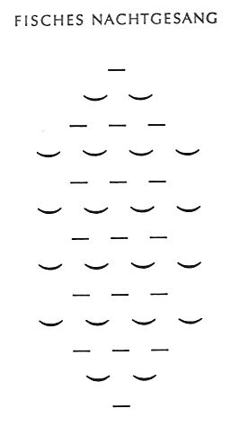

mailto:payer@payer.de
Zitierweise | cite as:
Payer, Alois <1944 - >: Sanskritkurs. -- 53. Lektion 53 (Semesterferien). -- Fassung vom 2009-01-19. -- URL: http://www.payer.de/sanskritkurs/lektion53.htm
Erstmals hier publiziert: 2009-01-19
Überarbeitungen:
Anlass: Lehrveranstaltungen 1980 - 1984
©opyright: Dieser Text steht der Allgemeinheit zur Verfügung. Eine Verwertung in Publikationen, die über übliche Zitate hinausgeht, bedarf der ausdrücklichen Genehmigung des Verfassers
Dieser Text ist Teil der Abteilung Sanskrit von Tüpfli's Global Village Library
Falls Sie die diakritischen Zeichen nicht dargestellt bekommen, installieren Sie eine Schrift mit Diakritika wie z.B. Tahoma.
Die Devanāgarī-Zeichen sind in Unicode kodiert. Sie benötigen also eine Unicode-Devanāgarī-Schrift.
Der Dual (द्विवचनम्) wird verwendet, um
"zwei" zu bezeichnen:
Die Verwendung des Dual ist dort obligatorisch, wo es sich um zwei Dinge usw. handelt:
Manchmal bezeichnet der Dual ein männliches plus ein weibliches Exemplar derselben Klasse (Art, Gattung):
Wörter, die "ein Paar" bedeuten - z.B. युग n., द्वन्द्व n., द्वय n. - werden aber immer im Singular verwendet, es sei denn es handle sich um zwei oder mehr Paare:
|
Abb.: मार्जारयुगम् : गुम्पिदैक्षेर्लावावयोर्मार्जारौ = "Ein
Katzenpaar: Gumpi und Deixerl, die beiden Katzen (मार्जार m.) von uns beiden"
(Bild: Payer)
Abb.: हस्तौ
पुणे
[Bildquelle: zen. --
http://www.flickr.com/photos/zen/384505854/. -- Zugriff am 2009-01-18. --
Creative
Commons Lizenz (Namensnennung, keine kommerzielle Nutzung, share alike)
| Maskulininum/Femininum पुंस्/स्त्री |
Neutrum नपुंसक |
|
|---|---|---|
| प्रथमा, द्वितीया, आमन्त्रितम् | -au | -ī |
| तृतीया, चतुर्थी, पञ्चमी | -bhyām | |
| सष्ठी, सप्तमी | -os | |
|
Bei Nomina mit Stammabstufung haben der Nom.Akk.Vok.Dual m.f. den starken Stamm |
सत्यवाच् 3 "die Wahrheit sprechend"
Maskulininum/Femininum
पुंस्/स्त्रीNeutrum
नपुंसकप्रथमा, द्वितीया, आमन्त्रितम् सत्यवाचौ सत्यवाची तृतीया, चतुर्थी, पञ्चमी सत्यवाग्भ्याम् सष्ठी, सप्तमी सत्यवाचोस्
बलिन् 3 "(besonders) stark"
Maskulininum
पुंस्Neutrum
नपुंसकप्रथमा, द्वितीया, आमन्त्रितम् बलिनौ बलिनी तृतीया, चतुर्थी, पञ्चमी बलिभ्याम् सष्ठी, सप्तमी बलिनोस्
सुमनस् 3 "wohlgesinnt"
Maskulininum/Femininum
पुंस्/स्त्रीNeutrum
नपुंसकप्रथमा, द्वितीया, आमन्त्रितम् सुमनसौ सुमनसी तृतीया, चतुर्थी, पञ्चमी सुमनोभ्याम् सष्ठी, सप्तमी सुमनसोस्
हविस् n. "Opfergabe"
Neutrum
नपुंसकप्रथमा, द्वितीया, आमन्त्रितम् हविषी तृतीया, चतुर्थी, पञ्चमी हविर्भ्याम् सष्ठी, सप्तमी हविषोस्
दीर्धायुस् 3 "langlebig"
Maskulininum/Femininum
पुंस्/स्त्रीNeutrum
नपुंसकप्रथमा, द्वितीया, आमन्त्रितम् दीर्घायुषौ दीर्घायुषी तृतीया, चतुर्थी, पञ्चमी दीर्घायुर्भ्याम् सष्ठी, सप्तमी दीर्घायुषोस्
Partizip Präsens Parasmaipada
भरन्त् 3 "tragend"
Maskulininum
पुंस्Neutrum
नपुंसकप्रथमा, द्वितीया, आमन्त्रितम् भरन्तौ भरन्ती (!) तृतीया, चतुर्थी, पञ्चमी भरद्भ्याम् सष्ठी, सप्तमी भरतोस्
Abb.: भरन्तौ
[Bildquelle: Dey. --
http://www.flickr.com/photos/dey/459141804/. -- Zugriff am 2009-01-19. --
Creative
Commons Lizenz (Namensnennung, keine kommerzielle Nutzung, share alike)]
ददत् 3 "gebend"
Maskulininum
पुंस्Neutrum
नपुंसकप्रथमा, द्वितीया, आमन्त्रितम् ददतौ ददती तृतीया, चतुर्थी, पञ्चमी ददद्भ्याम् सष्ठी, सप्तमी ददतोस्
Stämme auf -mant/-vant
पशुमन्त् 3 "Vieh besitzend"
Maskulininum
पुंस्Neutrum
नपुंसकप्रथमा, द्वितीया, आमन्त्रितम् पशुमन्तौ पशुमती तृतीया, चतुर्थी, पञ्चमी पशुमद्भ्याम् सष्ठी, सप्तमी पशुमतोस्
महान्त् 3 "groß"
Maskulininum
पुंस्Neutrum
नपुंसकप्रथमा, द्वितीया, आमन्त्रितम् महान्तौ महती तृतीया, चतुर्थी, पञ्चमी महद्भ्याम् सष्ठी, सप्तमी महतोस्
आत्मन् m.
Maskulininum
पुंस्प्रथमा, द्वितीया, आमन्त्रितम् आत्मानौ तृतीया, चतुर्थी, पञ्चमी आत्मभ्याम् सष्ठी, सप्तमी आत्मनोस्
ब्रह्मन् n.
Neutrum
नपुंसकप्रथमा, द्वितीया, आमन्त्रितम् ब्रह्मणी तृतीया, चतुर्थी, पञ्चमी ब्रह्मभ्याम् सष्ठी, सप्तमी ब्रह्मणोस्
राजन् m. "König"
Maskulininum
पुंस्प्रथमा, द्वितीया, आमन्त्रितम् राजानौ तृतीया, चतुर्थी, पञ्चमी राजभ्याम् सष्ठी, सप्तमी राज्ञोस्
सीमन् f. "Grenze"
Femininum
स्त्रीप्रथमा, द्वितीया, आमन्त्रितम् सीमानौ तृतीया, चतुर्थी, पञ्चमी सीमभ्याम् सष्ठी, सप्तमी सीम्नोस्
नामन् n. "Name"
Neutrum
नपुंसकप्रथमा, द्वितीया, आमन्त्रितम् नाम्नी
नामानीतृतीया, चतुर्थी, पञ्चमी नामभ्याम् सष्ठी, सप्तमी नाम्नोस्
Stämme auf -a
देव m. "Gott"
फल n. "Frucht
Maskulininum
पुंस्Neutrum
नपुंसकप्रथमा, द्वितीया, आमन्त्रितम् देवौ फले तृतीया, चतुर्थी, पञ्चमी देवाभ्याम् फलाभ्याम् सष्ठी, सप्तमी देवयोस् फलयोस्
Abb.: फले
मुंबई
[Bildquelle: gruntzooki. --
http://www.flickr.com/photos/doctorow/2890329486/. -- Zugriff am 2009-01-19.
-- Creative
Commons Lizenz (Namensnennung, share alike)]
Stämme auf -i
अग्नि m. "Feuer"
वारि n. "Wasser"
मति f. "Gedanke"
Maskulininum
पुंस्Femininum
स्त्रीNeutrum
नपुंसकप्रथमा, द्वितीया, आमन्त्रितम् अग्नी मती वारिणी तृतीया, चतुर्थी, पञ्चमी अग्निभ्याम् मतिभ्याम् वारिभ्याम् सष्ठी, सप्तमी अग्न्योस् मत्योस् वारिणोस्
Stämme auf -u
शत्रु m.
मधु n.
धेनु f.
Maskulininum
पुंस्Femininum
स्त्रीNeutrum
नपुंसकप्रथमा, द्वितीया, आमन्त्रितम् शत्रू धेनू मधुनी तृतीया, चतुर्थी, पञ्चमी शत्रुभ्याम् धेनुभ्याम् मधुभ्याम् सष्ठी, सप्तमी शत्र्वोस् धेन्वोस् मधुनोस्
Abb.: धेनू
Ahmedabad = અમદાવાદ
[Bildquelle: betta design. --
http://www.flickr.com/photos/betta_design/2742345344/. -- Zugriff am
2009-01-19. --
Creative Commons Lizenz (Namensnennung, keine kommerzielle Nutzung)]
Stämme auf -ā
कन्या f. "Mädchen"
Femininum
स्त्रीप्रथमा, द्वितीया, आमन्त्रितम् कन्ये तृतीया, चतुर्थी, पञ्चमी कन्याभ्याम् सष्ठी, सप्तमी कन्ययोस्
Mehrsilbige Stämme auf -ī
देवी f. "Göttin"
Femininum
स्त्रीप्रथमा, द्वितीया, आमन्त्रितम् देव्यौ तृतीया, चतुर्थी, पञ्चमी देवीभ्याम् सष्ठी, सप्तमी देव्योस्
Stämme auf -ṛ
दातृ 3 "Geber"
Maskulininum/Femininum
पुंस्/स्त्रीNeutrum
नपुंसकप्रथमा, द्वितीया, आमन्त्रितम् दातरौ दातृणी तृतीया, चतुर्थी, पञ्चमी दातृभ्याम् सष्ठी, सप्तमी दात्रोस्
पितृ m. "Vater"
Maskulininum
पुंस्प्रथमा, द्वितीया, आमन्त्रितम् पितरौ तृतीया, चतुर्थी, पञ्चमी पितृभ्याम् सष्ठी, सप्तमी पित्रोस्
Beispiele:
अर्थधर्मौ "Nutzen (अर्थ) und Dharma"
युधिष्ठिरार्जुनौ "Yudhiṣṭhira und Arjuna"
सुखदुःखे (neben: सुखदुःखम्) "Glück und Leid"
शीतोष्णे "Kälte und Wärme"
Werden zwei Verwandtschaftswörter auf -ṛ
(oder zwei Substantive auf -ṛ, die Bezeichnungen für Opferpriester
sind) zu einem Dvandva komponiert, so steht das erste Glied in der
Form des Nominativ Singular:
Dasselbe geschieht mit einem solchen Verwandtschaftswort in einem Dvandva vor -पुत्र :
Bilden die Namen zweier Gottheiten, die gewöhnlich bei Opfern genannt werden, ein Dvandva, so wird der auslautende Vokal des ersten Gliedes gewöhnlich verlängert:
Auch bei anderen Dvandva kommt diese Vokalverlängerung vor. |
Abb.: पितापुत्रौ
[Bildquelle: Dey. --
http://www.flickr.com/photos/dey/458678074/. -- Zugriff am 2009-01-19.
--
Creative Commons Lizenz (Namensnennung, keine kommerzielle Nutzung,
share alike)]
| तद् | एतद् | इदम् | यद् | किम् | |
|---|---|---|---|---|---|
| Maskulinum | |||||
| प्रथमा | तौ | एतौ | इमौ | यौ | कौ |
| द्वितीया | तौ | एतौ एनौ |
इमौ एनौ |
यौ | कौ |
| तृतीया, चतुर्थी, पञ्चमी | ताभ्याम् | एताभ्याम् | आभ्याम् | याभ्याम् | काभ्याम् |
| षष्ठी, सप्तमी | तयोस् | एतयोस् एनयोस् |
अनयोस् एनयोस् |
ययोस् | कयोस् |
| Neutrum | |||||
| प्रथमा | ते | एते | इमे | ये | के |
| द्वितीया | ते | एते एने |
इमे एने |
ये | के |
| Rest wie Maskulinum | |||||
| Femininum | |||||
| प्रथमा | ते | एते | इमे | ये | के |
| द्वितीया | ते | एते एने |
इमे एने |
ये | के |
| Rest wie Maskulinum | |||||
कतर 3 "wer von beiden" und कतम 3 "wer von mehreren" werden in allen Kasus wie यद् dekliniert.
Folgende Pronominaladjektive werden in allen Kasus wie यद् dekliniert:
Folgende Pronominaladjektive werden wie सर्व dekliniert. Im Abl.Lok.sg.m.n sowie in im Nom.pl. können sie nach der -a- bzw. -ā-Deklination dekliniert werden:
Eine Anzahl von Adjektiven bildet den
Komparativ bzw. Superlativ mit folgenden कृत्-Suffixen (!):
Während die तद्धित-Suffixe -तर und -तम an den Maskulinstamm des Adjektivs treten, werden die Suffixe -ईयस् und -इष्ठ an die Wurzel angefügt, von der das Adjektiv abgeleitet ist (sofern es eine solche Wurzel gibt!). Der Wurzelvokal ist hochstufig. Superlative auf -iṣṭha (Fem.: iṣṭhā) werden wie a- bzw. ā-Stämme dekliniert. Deklonation von -īyas siehe unten. |
Beispiele:
| Wurzel | Adjektiv | Komparativ | Superlativ |
|---|---|---|---|
| क्षिप् 6P "werfen" | क्षिप्र 3 "schnell |
क्षेपीयस् 3 "schneller" क्षिप्रतर 3 |
क्षेपिष्ठ 3 "am schnellsten" क्षिप्रतम 3 |
| स्था 1P "stehen" | स्थिर 3 "beständig, fest" |
स्थेयस् 3 "fester" स्थिरतर 3 |
स्थेष्ठ 3 "am festesten" स्थिरतम 3 |
Besondere Regeln für die Anfügung dieser Suffixe:
| Regel 1: Der auslautende Vokal eines mehrsilbigen Maskulinstammes oder der auslautende Vokal und der vorausgehende Vokal fallen ab. |
Beispiele:
Adjektiv Komparativ Superlativ पाप 3 "böse" पापीयस् पापिष्ठ महान्त् 3 "groß" महीयस् महिष्ठ
| Regel 2: Possessivsuffixe (-mant, vant, -vin, -in u.ä.) fallen ab. Besteht der übrig bleibende Teil nur aus einer Silbe, wird er nicht weiter verändert, nur durch die Verbindung mit dem Possesivsuffix bedingte Lautveränderungen werden rückgängig gemacht. Besteht der Rest aber aus mehr als einer Silbe, tritt Regel 1 in Kraft. |
Beispiele:
Adjektiv Komparativ Superlativ धनवन्त् 3 "reich" धनीयस् धनिष्ठ बलिन् 3 "(besonders) stark" बलीयस् बलिष्ठ वसुमन्त् "Güter besitzend" वसीयस् वसिष्ठ
| Regel 3: Für -ṛ-, dem ein Anfangsvokal vorausgeht und auf das nur ein einziger Konsonant folgt, wird -ra- substituiert. |
Beispiel:
Adjektiv Komparativ Superlativ पृथु 3 "breit" प्रथीयस् प्रथिष्ठ
Verzeichnis der häufigsten Steigerungsformen solcher Art zu bisher gelernten Adjektiven:
Adjektiv Komparativ Superlativ अल्प 3 "klein, wenig" अल्पीयस् अल्पिष्ठ क्षिप्र 3 "schnell"
(zu क्षिप्)क्षेपीयस् क्षेपिष्ठ गुरु 3 "schwer"
(zu *गृ)गरीयस् गरिष्ठ दीर्घ 3 "lang"
(zu *दृघ्)द्राघीयस् द्राघिष्ठ दूर 3 "fern"
(zu *दु/*दू)दवीयस् दविष्ठ धनवन्त् 3 "reich" धनीयस् धनिष्ठ पाप 3 "böse" पापीयस् पापिष्ठ पृथु 3 "breit" प्रथीयस् प्रथीष्ठ प्रिय 3 "lieb" प्रेयस् प्रेष्ठ बलिन् 3 "(besonders) stark" बलीयस् बलिष्ठ महान्त् 3 "groß" महीयस् महिष्ठ युवन् 3 "jung" यवीयस् यविष्ठ स्थिर 3 "fest"
(zu स्था)स्थेयस् स्थेष्ठ ह्रस्व 3 "kurz" ह्रसीयस् ह्रसिष्ठ
Abb.: द्राघीयो
लिङ्गम् : लोकस्य द्राघिष्ठं
शिवलिङ्गम्
33 m hoch
Kotilingeshwara-Temple, Kamamsandra, Kolar-District =
ಕೋಲಾರ,
Karnataka =
ಕರ್ನಾಟಕ
[Bildquelle: mattlogelin.
--
http://www.flickr.com/photos/mattlogelin/150301623/. -- Zugriff am
2009-01-19. --
Creative Commons Lizenz (Namensnennung, keine kommerzielle Nutzung)]
Einige Steigerungsformen dieser Art haben überhaupt keine wurzelverwandte Grundform, sie sind "defektiv". Deshalb sind folgende Reihen besonders zu merken:
(Adjektiv) Komparativ Superlativ (अल्प 3 "klein, wenig") कनीयस्
vgl. कन्या f. "Mädchen = die Kleine"कनिष्ठ (प्रशस्य 3 "lobenswert, gut") श्रेयस्
zu श्री f. "Glanz"श्रेष्ठ (प्रशस्य 3 "lobenswert, gut") ज्यायस्
auch: "älter"
zu ज्या f. "Übergewalt"ज्येष्ठ
auch: "am ältesten"(बहु 3 "viel") भूयस् भूयिष्ठ (वृद्ध 3 "alt") वर्षीयस्
zu वर्ष n.m. "Regenzeit, Jahr"वर्षिष्ठ (वृद्ध 3 "alt") ज्यायस्
auch: "besser"
zu ज्या f. "Übergewalt"ज्येष्ठ
auch: "bester"
| Komparative auf -īyas bilden das Femininum auf -īyasī (Deklination wie देवी). Das maskulinum und Neutrum wird nach folgendem Paradigma dekliniert. |
| एकवचनम् | द्विवचनम् | बहुवचनम् | ||||
|---|---|---|---|---|---|---|
| पुमान् | नपुंसकम् | पुमान् | नपुम्षकम् | पुमान् | नपुंसकम् | |
| प्रथमा | गरीयान् | गरीयस् | गरीयांसौ | गरीयसी | गरीयांसस् | गरीयांसि |
| द्वितीया | गरीयांसम् | गरीयस् | गरीयसस् | |||
| तृतीया | गरीयसा | गरीयोभ्याम् | गरीयोभिस् | |||
| चतुर्थी | गरीयसे | गरीयोभ्यस् | ||||
| पञ्चमी | गरीयसस् | |||||
| षष्ठी | गरीयसस् | गरीयसोस् | गरीयसाम् | |||
| सप्तमी | गरीयसि | गरीयःसु गरीयस्सु |
||||
| आमन्त्रितम् | गरीयान् | गरीयस् | गरियांसौ | गरीयसीव् | गरीयांसस् | गरीयांसी |

Abb.: Christian Morgenstern <1871 - 1914>: Fisches Nachtgesang: das
tiefste deutsche Gedicht
Siehe auch:
Payer, Alois <1944 - >: Einführung in die Exegese von Sanskrittexten : Skript. -- Kap. 8: Die eigentliche Exegese, Teil II: Zu einzelnen Fragestellungen synchronen Verstehens. -- Anhang B: Zur Metrik von Sanskrittexten. -- URL: http://www.payer.de/exegese/exeg08b.htm
Die Bestimmung des Metrums ist aus folgenden Gründen wichtig:
Abb.: Herrmann Oldenberg (1854 - 1920)
1889 bis 1908 Ordinarius für Sanskrit in Kiel, von 1908 bis 1920 in Göttingen
[Bildquelle: Wikipedia. Public domain]
Die Inder unterscheiden:
Bei den Metren, bei denen die Zahl der Silben festgelegt ist (वृत्त) kann man zunächst weiter unterscheiden:
|
Merkvers
|
Eine Silbe ist
लघु = leicht ist eine Silbe, wenn
Kurze Vokale sind a, i, u, ṛ, ḷ Alle anderen Silben sind गुरु = schwer. Die letzte Silbe eines Versviertels (पाद) gilt immer als गुरु. In der metrischen Analyse bedeutet:
|
Beispiel: भगवद्गीता १,१:
धर्मक्षेत्रे कुरुक्षेत्रे समवेता युयुत्सवः ।
मामकाः पाण्डवाश्चैव किं अकुर्वत संजय ॥१॥Verteilung von लघु und गुरु :
ˉˉˉˉ˘ˉˉˉ ˘˘ˉˉ˘ˉ˘ˉ
ˉ˘ˉˉ˘ˉˉˉ ˘˘ˉ˘˘ˉ˘ˉ
| Merkvers:
श्लोके षष्ठं गुरु ज्ञेयं
|
Das wichtigste Versmaß in den Epen (महाभारत, रामायण) sowie unzähligen anderen Werken ist der Śloka ("Ruf", "Geräusch", "Strophe" zu श्रु "hören").
| Der श्लोक ist eine Doppelvers aus Halbversen
zu je 16 Silben. Jeder Halbvers zerfällt wieder in zwei Viertelverse (पाद)
zu je 8 Silben. Jeder Viertelvers zerfällt in zwei Teile zu je 4 Silben.
Der ganze Vers (पद्य n.) besteht also aus vier पाद (m. "Fuß, Viertel").
Die vier पाद werden mit a, b, c, (क्, ख्, ग्, घ्) durchgezählt. Aufbau des Śloka: Grundschema (पथ्या):
Die zweite und dritte Silbe eines पाद sollten nicht zugleich लघु sein. In b und d darf Silbe 2 - 4 nicht ˉ˘ˉsein. Nebenschemata (विपुला) für a und c: विपुला 1:
विपुला 2:
विपुला 3:
विपुला 4:
Bei allen Ślokaformen liegt die Hauptzäsur am Ende des 2. पाद : dort ist entweder Wortende oder - bei langen Komposita - Ende eines Kompositionsgliedes.
|
Bestimmen sie unter allen bisher gelernten Versen die Ślokas. Machen Sie zu diesen schriftlich das metrische Schema. Weisen Sie auf eventuelle Unregelmäßigkeiten bzw. Vipulāformen hin.
Finitum feliciter 1984-02-15
Editio interretialis feliciter finita 2009-01-19
Alois Maria Payer
श्रीगणेषाय नमः
Zu Lektion 54